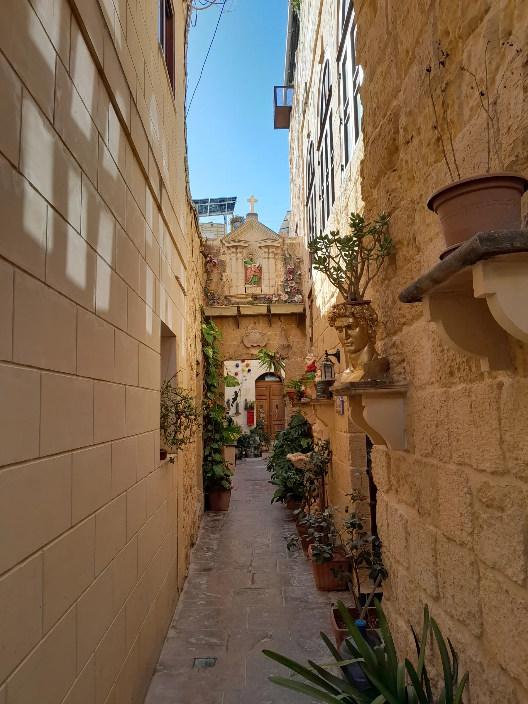

Older central streets carry dense heritage texture. Confirm the entrance, stairs, vehicle access, loading, noise and natural light at the actual home.
RABAT · READ THE ADDRESS
Old streets. Wider horizons.
Rabat begins below Mdina’s bastions, then opens into newer residential pockets and a much broader rural territory. A Rabat label is the start of the viewing brief: central lanes, Tal-Virtù, Għajn Qajjet and countryside addresses are different property contexts.

ONE NAME, SEVERAL SETTINGS
Historic Rabat is not the whole locality.
The Local Council places Rabat immediately below Mdina and describes a large territory extending well beyond the old town. Read the exact street and official locality before turning a broad marketing label into a claim about walkability, countryside, quiet or proximity.
Newer residential contexts should be named from the verified address. They are not automatically central Rabat, Mdina or countryside.
Baħrija, Kunċizzjoni, Landrijiet, Tas-Salib, Dwejra, Nadur and Mtahleb sit in a much wider territory. Never convert that breadth into a generic village-centre claim.
Adjacent does not mean interchangeable.
Mdina is a separate city and property context even where the urban fabric meets Rabat below the bastions. Check the official locality and street rather than borrowing the more familiar name.
Office of the Address Registrar ↗Specific sites, not blanket proximity.
Heritage Malta places the Domvs Romana at Wesgħet il-Mużew and St Paul’s Catacombs on Triq Ħal-Bajjada. They are concrete cultural anchors, not proof that every Rabat home sits beside a heritage site.
Heritage Malta — St Paul’s Catacombs ↗VERIFIED EVERYDAY EXAMPLES
Useful anchors, without a ranking.
These operator- and register-backed examples help orient a viewing. They are not a complete census and are not called closest, best or always open. Check current services, menus, hours and access directly.
Three operator records
MyConvenience’s directory currently lists Rabat branches on Triq San Bastjan and Triq il-Kulleġġ, plus MySupermarket on Vjal il-Ħaddiem. Stock and hours remain current store checks.
Operator locations ↗Domvs Romana
Heritage Malta identifies the Roman domestic site at Wesgħet il-Mużew. Current tickets, hours and access arrangements should be checked with the operator.
Heritage Malta source ↗St Paul’s Catacombs
The operator describes a burial complex with Punic, Roman and Byzantine context at Triq Ħal-Bajjada. That is a location example, not a distance promise for a listing.
Heritage Malta source ↗Several streets, several examples
The current MTA register includes Adelphi, Agata, Arama, The Peristyle, The Grapes and The Golden Fork under Rabat. The register establishes licensed examples, not ratings, prices or current menus.
MTA public register ↗Primary care serves a wider catchment.
Primary HealthCare currently places Rabat Health Centre at the Civic Centre on Triq San Kataldu and publishes a catchment wider than Rabat itself. That does not establish the journey, referral route or service availability for a particular home; confirm current arrangements directly.
No overview line becomes a route.
This edition draws no administrative boundary, straight-line shortcut, generic walking route or assumed connection to Mdina. Walking geometry, bus schedules, current car-traffic estimates and taxi-price observations remain separate sources requiring exact endpoints, mode and timestamp.
Continue west without merging localities.
For a separate village-core and cliff-edge context, continue to the Ħad-Dingli edition. Rabat streets, Dingli village and the Dingli cliffs remain distinct settings requiring their own exact route checks.
Continue to Baħrija as its own village.
Use the separate Il-Baħrija edition for its church-square, protected-valley and western-landscape context. Rabat's historic centre and Baħrija's village streets remain distinct.
Load the Rabat overview only when you need it.
The map provides broad orientation around Rabat, Mdina and nearby labels. It deliberately draws no locality border, property route or journey time and loads from OpenStreetMap only after your click. Places visible in one viewport remain separate property contexts.
Rabat Local Council geography and history · Office of the Address Registrar · Rabat Health Centre · Domvs Romana · St Paul’s Catacombs · MyConvenience locations · MTA restaurant register · Wikimedia Commons image record

No ranking, fixed opening hours, property-specific route, guaranteed outlook, parking claim, accessibility promise, locality-wide walkability or journey time is claimed.